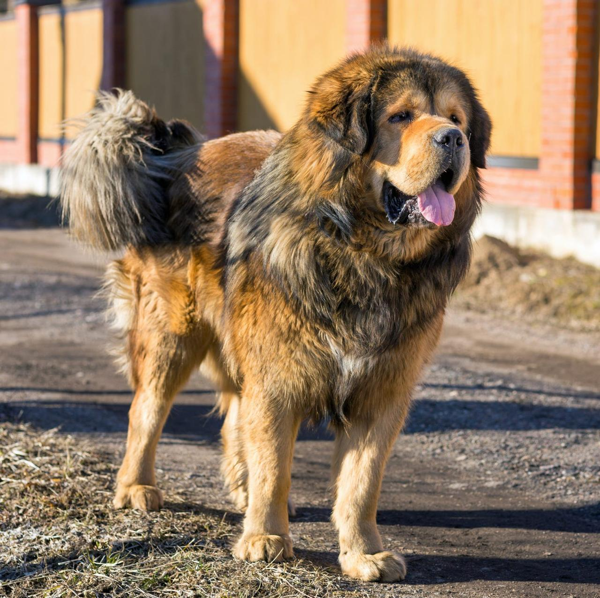
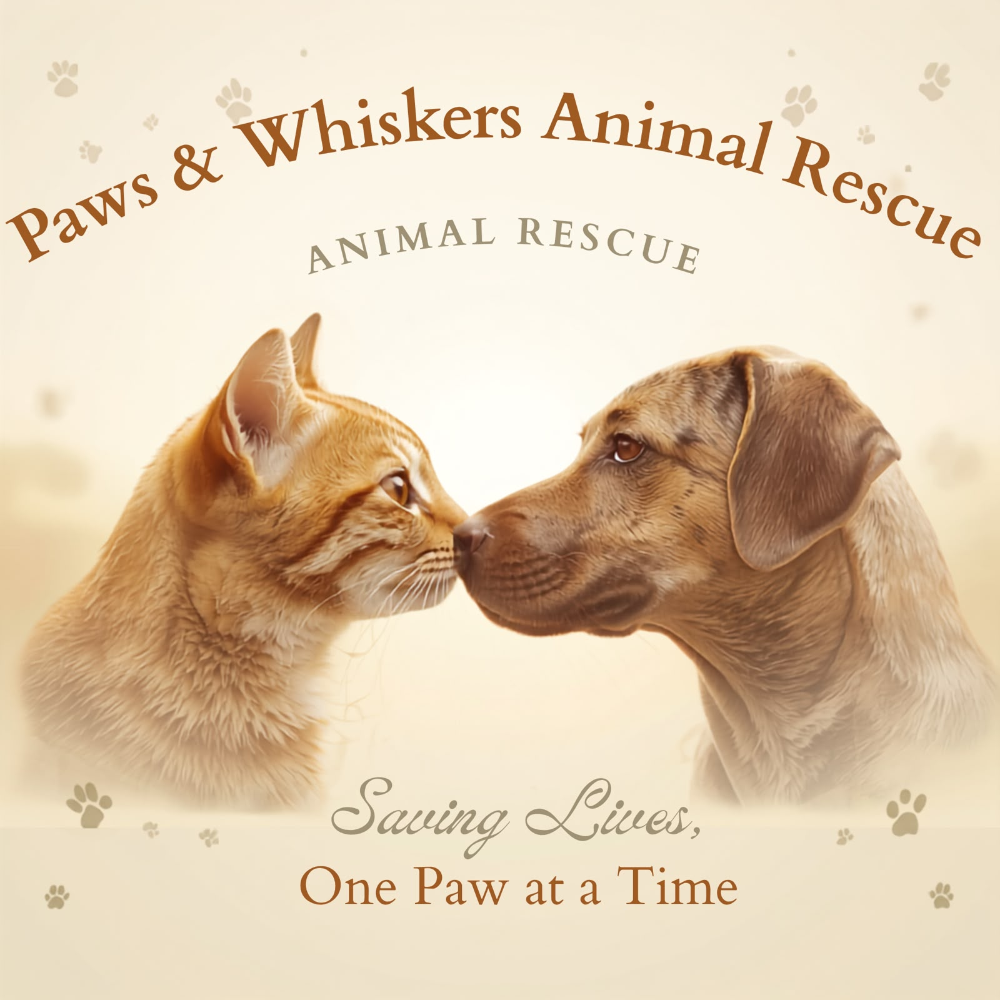
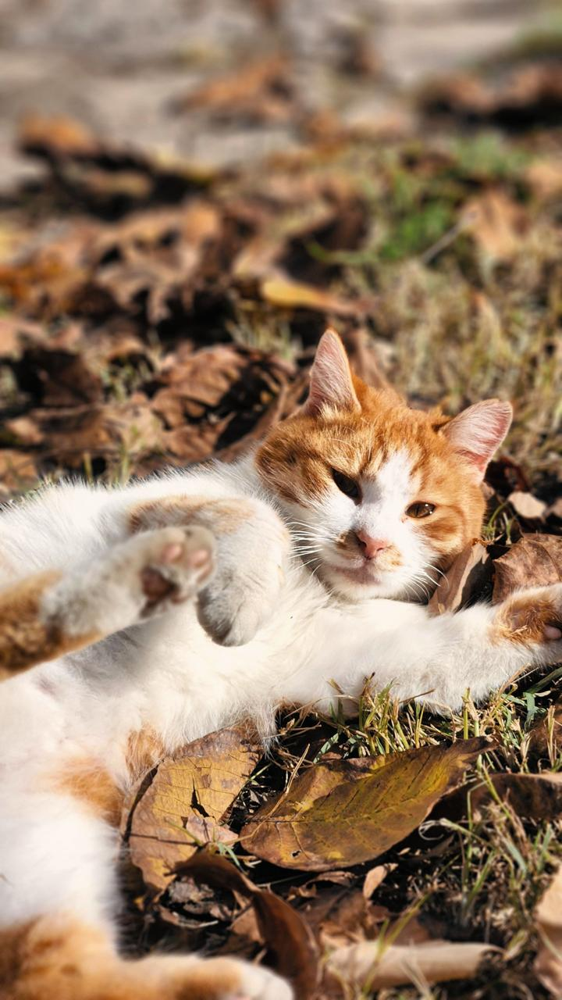

Buddy

Buddy is a friendly and playful mixed-breed dog looking for a loving home.

Paws & Whiskers Animal Rescue is dedicated to rescuing, rehabilitating, and rehoming animals in need.
Adopt an Animal Volunteer With Us Support Our RescueWe provide rescued animals with shelter, food, veterinary care, and support while helping them find loving forever homes.

Buddy is a friendly and playful mixed-breed dog looking for a loving home.

Luna is a gentle and curious cat looking for a caring family.

Max is a loyal Labrador mix who enjoys spending time with people.

Our mission is to rescue, rehabilitate, and rehome vulnerable animals while promoting responsible pet ownership and animal welfare.